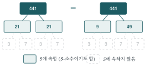

STEP I 2016, 문제 7
계속 읽기 전에 문제를 먼저 읽어 보자. 문제는 STEP Support Programme의 문제 데이터베이스에 있다: step.maths.org/questions/16-s1-q7
도입
\(1\)보다 큰 모든 자연수는 소수(prime)의 곱으로 나타내는 방법이 정확히 한 가지뿐이다. 예를 들어 \(60 = 2 \times 2 \times 3 \times 5\)이며, 다른 방법은 없다. 아마 이 사실을 너무 자주 써 왔기 때문에 증명할 필요조차 없을 만큼 당연하게 느껴질 것이다.
이 문제는 겉보기에는 아주 그럴듯하지만 그 “당연한” 사실이 성립하지 않는 작은 수의 세계를 만든다. STEP I 문제이므로 수학 자체는 어렵지 않지만, 여기서 얻는 교훈은 깊다. 바로 이 교훈이 1847년에 시도된 페르마의 마지막 정리(Fermat’s Last Theorem)의 유명한 증명을 무너뜨렸고, 대수학의 새로운 분야 하나를 탄생시켰다.
시작하기 전에
\(S\)와 \(T\)의 처음 몇 원소를 나열해 보자. 소문항 (iv)의 정의에 따르면 \(S\)의 원소 중 어느 것이 \(S\)-소수인가?
\(S = \{1, 5, 9, 13, 17, 21, 25, 29, 33, \ldots\}\)이고 \(T = \{3, 7, 11, 15, 19, 23, \ldots\}\)이다. \(S\)에 속하는 수가 (\(1\)이 아닌) \(S\)의 더 작은 원소들의 곱으로 나타내어지지 않으면, 그 수를 \(S\)-소수라 한다. 보통의 정수에서는 \(9 = 3 \times 3\)이지만, \(3\)이 \(S\)에 속하지 않으므로 \(9\)는 \(S\)-소수라는 점에 주목하자. 어떤 수가 “소수”인지는 어떤 수들을 쓸 수 있느냐에 달려 있다.
차근차근 풀기
단계 1 합집합, 교집합, 곱
모든 홀수는 \(4\)로 나눈 나머지가 \(1\) 또는 \(3\)이므로, \(S \cup T\)는 모든 양의 홀수의 집합이다. 어떤 수도 서로 다른 두 나머지를 가질 수는 없으므로 \(S \cap T\)는 공집합이다.
\(S\)의 일반적인 원소는 어떻게 나타낼까? 그런 원소 두 개의 곱은 무엇인가?
\(S\)의 원소는 \(a \geq 0\)에 대하여 \(4a + 1\) 꼴이고, \[(4a+1)(4b+1) = 16ab + 4a + 4b + 1 = 4(4ab + a + b) + 1 \in S.\] 따라서 \(S\)는 곱셈에 대하여 닫혀 있다(closed under multiplication). \(T\)에 대해서는 \[(4a+3)(4b+3) = 16ab + 12a + 12b + 9 = 4(4ab + 3a + 3b + 2) + 1,\] 이므로 이 값은 \(T\)가 아니라 \(S\)에 속한다. 예를 들어 \(3 \times 7 = 21 \in S\)이다. 따라서 \(T\)는 곱셈에 대하여 닫혀 있지 않다.
단계 2 \(T\)에 속하는 소인수
\(T\)에 속하면서 소수가 아닌 수를 하나 잡자. 그 수의 소인수는 모두 홀수이다. 소인수가 모두 \(S\)에 속한다면 어떻게 될까?
이 수는 홀수이므로 그 소인수(prime factor)도 모두 홀수이고, 각각 \(S\) 또는 \(T\)에 속한다. 소인수가 모두 \(S\)에 속한다면, \(S\)는 곱셈에 대하여 닫혀 있으므로 그 곱도 \(S\)에 속한다. 그런데 그 곱은 바로 처음의 수이고, 이 수는 \(T\)에 속한다. 따라서 적어도 하나의 소인수는 \(T\)에 속한다.■
단계 3 홀수 개의 인수
\(T\)의 원소를 짝수 개 곱하면 그 곱은 어디에 속할까? 홀수 개라면 어떨까?
\(T\)의 수 두 개를 곱하면 \(S\)의 수가 되고, \(S\)의 수끼리 곱하면 \(S\)의 수가 되므로, \(T\)의 인수가 짝수 개이면 곱은 \(S\)에 속한다. 홀수 개이면 곱은 (\(S\)에 속하는 수) \(\times\) (\(T\)의 원소 하나)가 되고, 같은 종류의 계산에 의해 이는 \(T\)에 속한다.
이제 \(t \in T\)를 잡자. \(t\)가 \(T\)-소수이면 더 할 일이 없다. 그렇지 않으면 \(t\)를 \(T\)의 원소들의 곱으로 나타내는데, 각 원소는 \(1\)보다 크므로 \(t\)보다 작다. 이 중 \(T\)-소수가 아닌 것은 다시 더 분해할 수 있고, 이를 계속 반복한다. 인수는 매번 더 작아지므로 이 과정은 언젠가 끝나고(이번에도 정렬성 원리(well-ordering)이다), 결국 \(t\)는 \(T\)-소수들의 곱으로 나타내어진다. 그 곱이 \(T\)에 속하므로 인수의 개수는 홀수여야 한다.■
단계 4 두 가지 인수분해
\(S\)-소수로의 인수분해가 본질적으로 서로 다른 두 가지인 \(S\)의 수를 찾아라. 힌트: \(9\)처럼, 보통의 소인수가 \(S\)에 없기 때문에 비로소 \(S\)-소수가 되는 수를 이용하라.
\(S\)-소수는 \(5, 9, 13, 17, 21, 29, 33, 37, 41, 49, \ldots\)로 시작한다. 이제 \(21 = 3 \times 7\), \(9 = 3 \times 3\), \(49 = 7 \times 7\)은 모두 \(S\)-소수인데, \(3\)과 \(7\)이 \(S\)에 속하지 않기 때문이다. 그리고 \[441 = 21 \times 21 = 9 \times 49.\] 이처럼 \(441\)은 \(S\)-소수로의 인수분해(factorisation)를 서로 다른 두 가지로 가진다(그림 1.7.1). \(S\)에서는 유일 인수분해(unique factorisation)가 성립하지 않는다.■

돌아보기
“소수”인지는 체계에 따라 달라진다. \(9\)와 \(21\)은 정수에서는 합성수(composite)이지만 \(S\)에서는 소수이다. 이들을 인수분해하는 데 필요한 수가 없기 때문이다.
닫혀 있는지가 중요하다. \(S\)는 곱셈에 대하여 닫혀 있지만 \(T\)는 그렇지 않다. 이 하나의 차이가 소문항 (iii)과 (iv)를 이끌었다.
당연한 사실도 정리일 수 있다. 정수에서 유일 인수분해가 성립한다는 것에는 증명이 필요하다. 이 문제가 그 이유를 보여 준다. 매우 비슷해 보이는 체계에서는 그것이 거짓이다.
숨은 수학
정수는 무엇이 특별한가
보통의 정수에서는 왜 인수분해가 잘 되는 것일까? 핵심이 되는 사실은 유클리드의 보조정리(Euclid’s lemma)이다. 소수 \(p\)가 곱 \(ab\)를 나누면, \(p\)는 \(a\)를 나누거나 \(p\)는 \(b\)를 나눈다. 이 보조정리는 유클리드 호제법(Euclidean algorithm)을 이용하여 증명하며, 바로 이것이 \(S\)에서 성립하지 않는다. 거기서는 \(S\)-소수 \(9\)가 \(21 \times 21 = 441\)을 나누지만(\(441 = 9 \times 49\)이므로), \(9\)는 \(21\)을 \(S\) 안에서 나누지 않는다. 대학 1학년 때 유클리드의 보조정리를 엄밀하게 증명하고, 유일 인수분해가 그로부터 따라 나온다는 것을 보게 될 것이다.
1847년 3월 1일, 가브리엘 라메(Gabriel Lamé)는 파리 과학 아카데미(Paris Academy)에서 페르마의 마지막 정리를 증명했다고 발표했다. 그의 아이디어는 복소수 단위근(roots of unity)을 이용하여 \(x^n + y^n\)을 \[x^n + y^n = (x + y)(x + \zeta y)(x + \zeta^2 y) \cdots (x + \zeta^{n-1} y), \qquad \zeta = e^{2\pi \mathrm{i}/n}\] (단, \(n\)은 홀수)과 같이 인수분해한 다음, 각 괄호의 소인수에 대해 논증하는 것이었다. 조제프 리우빌(Joseph Liouville)은 곧바로 이의를 제기했다. \(\zeta\)로 만들어진 수들이 왜 유일하게 인수분해되어야 하는가? 몇 주 뒤, 에른스트 쿠머(Ernst Kummer)가 그런 수들이 유일하게 인수분해되지 않는 경우가 많다는 것을 이미 보였다는 사실이 밝혀졌다. 처음으로 실패하는 경우는 \(n = 23\)이다.
쿠머는 유일 인수분해를 회복시켜 주는 새로운 대상인 “아이디얼 수(ideal numbers)”를 고안하여 살릴 수 있는 것을 살려 냈고, 매우 많은 지수에 대해 페르마의 마지막 정리를 증명했다. 리하르트 데데킨트(Richard Dedekind)는 쿠머의 아이디얼 수를 현대 대수학의 핵심 개념 중 하나인 아이디얼(ideal)로 발전시켰다.
기억해 둘 만한 더 작은 예
수 체계 \(\mathbb{Z}[\sqrt{-5}] = \{a + b\sqrt{-5} : a, b \in \mathbb{Z}\}\)에서는 \[6 = 2 \times 3 = (1 + \sqrt{-5})(1 - \sqrt{-5}),\] 이고, 네 인수는 모두 그 체계에서 “소수”이다(연습문제 3). 이를 인수분해가 실제로 유일한 1.6 절의 가우스 정수(Gaussian integers)와 비교해 보자. 이런 종류의 체계 중 어떤 것에서 유일 인수분해가 성립하는지는 깊은 문제이다. 가우스(Gauss)는 \(\mathbb{Z}[\sqrt{-d}]\) 꼴의 체계와 그와 가까운 체계들 가운데 이 성질을 가지는 것은 아홉 개뿐이라고 추측했다. 이 추측은 1952년부터 1967년 사이에 Heegner, Baker, Stark에 의해 마침내 증명되었다.
사고 기술
어떤 사실이 너무 당연해서 증명할 필요가 없어 보일 때, 그것이 무엇에 의존하는지 묻고, 그것이 성립하지 않는 상황을 찾아보라.
반례(counterexample), 즉 “당연한” 사실이 거짓이 되는 세계를 만들어 보는 것은 증명에 정말로 필요한 것이 무엇인지 알아내는 가장 좋은 방법 중 하나이다. 학부 대수학의 상당 부분은 정수의 익숙한 성질 중 어떤 것이 더 일반적인 체계에서도 살아남는지를 묻는 일이다.
더 도전하기
또 다른 예. \(693\)이 \(S\)-소수로의 인수분해를 서로 다른 두 가지로 가짐을 보여라. 이런 예를 만들어 내는 일반적인 방법을 찾을 수 있는가?
짝수. \(E = \{2, 4, 6, 8, \ldots\}\)라 하자. 어떤 수가 \(E\)-소수인가? \(60\)이 \(E\)-소수로의 인수분해를 두 가지 이상 가짐을 보여라.
\(\mathbb{Z}[\sqrt{-5}]\). 노름(norm)을 \(N(a + b\sqrt{-5}) = a^2 + 5b^2\)으로 정의하자. \(N(zw) = N(z)N(w)\)임을 보여라. 노름이 \(2\) 또는 \(3\)인 원소가 없음을 보여서, \(2\), \(3\), \(1 \pm \sqrt{-5}\)가 \(\mathbb{Z}[\sqrt{-5}]\)에서 더 이상 인수분해되지 않음을 유도하라.
유클리드의 보조정리 활용. 심화 유클리드의 보조정리(소수가 \(ab\)를 나누면 그 소수는 \(a\) 또는 \(b\)를 나눈다)를 가정하고, \(1\)보다 큰 모든 정수는 인수의 순서를 무시하면 소수로의 인수분해를 단 하나만 가짐을 증명하라.
더 읽을거리
Ian Stewart & David Tall, Algebraic Number Theory and Fermat’s Last Theorem (CRC Press). 앞부분의 장들에서 라메, 쿠머, 아이디얼의 이야기를 의욕 있는 대학 1학년 학생이 따라갈 수 있는 수준으로 들려준다.
John Stillwell, Elements of Number Theory. 정수와 가우스 정수에서의 유일 인수분해를 나란히 비교한다.
Harold Edwards, Fermat’s Last Theorem: A Genetic Introduction (Springer). 야심 있는 독자를 위한 책으로, 쿠머의 업적을 그 역사를 통해 설명한다.